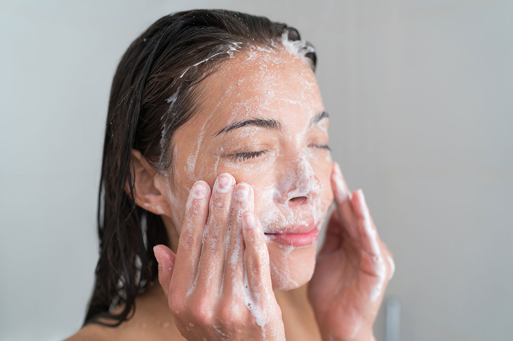
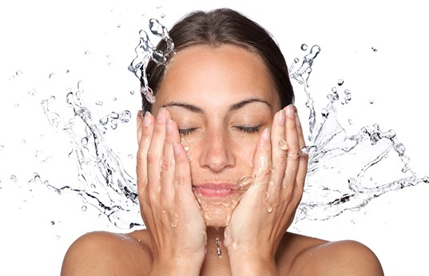
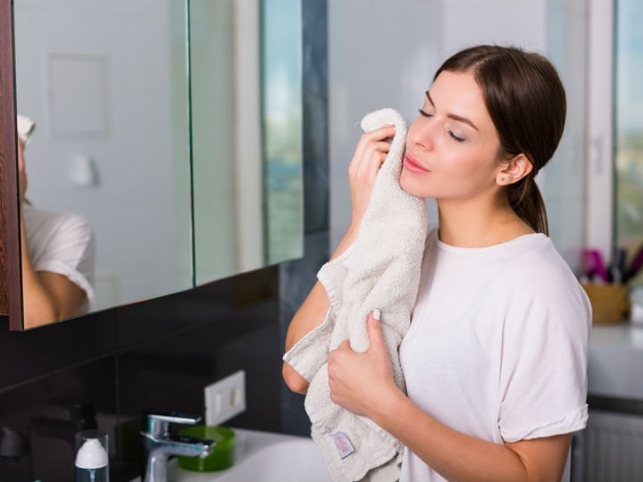

PASO 1: LIMPIEZA
¿Cómo limpio correctamente mi piel?
Además de desmaquillarte, lavar la piel de tu rostro ayudará a eliminar el exceso de contaminantes, grasa y otras impurezas acumuladas durante el día.
Limpiador facial:
Este es el paso más importante para comenzar con la rutina, no importa que ese día no te hayas maquillado o salido de casa, en el ambiente siempre hay partículas de polvo y contaminación que se adhieren a tu cara y si no se limpian,
puedes esperar granitos e imperfecciones. Este paso va dirigido a todos los tipos de cara, es necesario buscar un jabón facial, es decir, que no sea el mismo jabón que va dirigido
para el cuerpo o las manos. Es posible conseguir uno que esté hecho específicamente para tu tipo de piel.
- Para lavarte de forma efectiva utiliza agua tibia para abrir los poros. Evita usar agua demasiado caliente o fría, ya que podría irritar la piel.
- Enseguida aplica un limpiador masajeando con movimientos circulares por aproximadamente 1 minuto.
- Enjuágate, asegurándote de eliminar el limpiador completamente. (Puedes enjuagarte una segunda vez para eliminar por completo cualquier rastro de impurezas)
- Después de enjuagarte, sécate con ligeras palmaditas, sin frotar la toalla. De esta forma evitarás maltratar la piel delicada de tu rostro.


